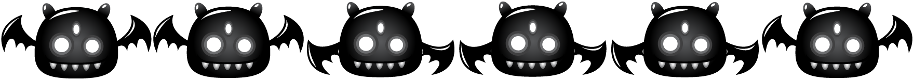
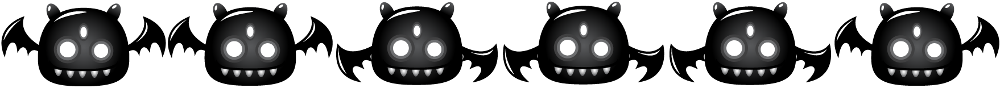

Shura's Quest for Revenge
Once upon a time, in the whimsical land of Mushroom Kingdom, Mario and his loyal dog, Shura, lived peacefully. The kingdom was known for its tranquility, joy, and prosperity. Mario, the heroic plumber, had saved the kingdom from countless threats, alongside his beloved companion, Shura. The bond between the two was unbreakable, and their adventures were legendary.
However, fate had other plans in store. In a cruel twist of destiny, Mario met an untimely demise, leaving Shura heartbroken and devastated. The land mourned the loss of its hero, and the skies seemed grayer as darkness engulfed the kingdom.
Filled with grief and an insatiable thirst for revenge, Shura refused to accept his master's fate. Determined to avenge Mario's death, he embarked on a perilous journey through the treacherous terrains of Mushroom Kingdom. But his once-playful demeanor had transformed into a fierce determination, fueled by a desire to rid the world of the monsters responsible for Mario's demise.
In the shadows lurked a malevolent force - a sinister league of monsters, led by the ruthless King Koopa. This maleficent ruler had orchestrated Mario's downfall, seeking to plunge Mushroom Kingdom into eternal darkness. It was a battle between good and evil, with Shura at the helm.
Equipped with courage, agility, and newfound powers, Shura ventured forth to face the monsters that plagued his world. As he navigated through lush forests, lava-filled dungeons, and perilous mountains, he encountered hordes of menacing foes. Each battle only strengthened Shura's resolve, and with every monster vanquished, he drew closer to the truth behind Mario's death.
Along the way, Shura formed unexpected alliances with other inhabitants of the kingdom. Together, they united against the malevolent forces, facing unimaginable challenges, and proving that the bonds of friendship and love could conquer even the darkest of adversaries.
As the days turned to nights, the journey grew more treacherous, testing Shura's limits and resolve. But he pushed forward, carrying the memory of Mario in his heart, and embracing the strength that came from love and vengeance.
In the final confrontation, Shura faced King Koopa himself, the embodiment of all evil that had plagued Mushroom Kingdom. It was a battle of epic proportions, as the fate of the kingdom hung in the balance.
With a triumphant roar and a heart full of love, Shura emerged victorious, banishing the malevolent forces and avenging Mario's death. The skies cleared, and the kingdom rejoiced as the darkness lifted, heralding a new era of peace and prosperity.
Shura had become a legend, a hero in his own right, eternally bound to the memory of his beloved master, Mario. His tale of courage, love, and revenge would be told throughout generations, reminding all that even in the darkest moments, the strength of love could conquer all.
Thus, in the magical land of Mushroom Kingdom, Shura's quest for revenge transformed him into a beacon of hope and inspiration, ensuring that the legacy of Mario would never be forgotten. And so, their adventures lived on, in the hearts and souls of those who believe in the power of love and friendship, forevermore.